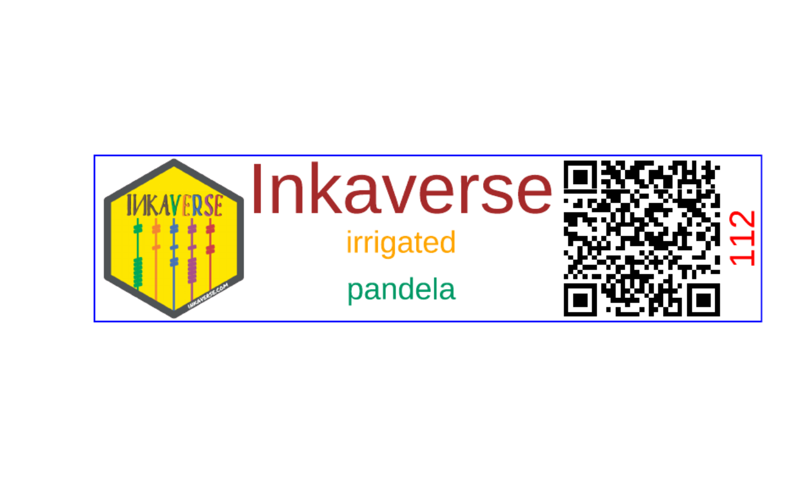

Generate labels based in a data frame
Usage
label_print(
label,
mode = "sample",
filename = "labels",
margin = 0.04,
paper = c(21, 29.7),
units = "cm",
viewer = FALSE,
smpres = 200,
nlabels = NA
)Arguments
- label
Data frame to build the labels or n repeated labels (table/numeric)
- mode
Label generation (string: "sample/preview", "complete")
- filename
Labels file name (string: "labels")
- margin
Labels margins. margin(numeric vector: t = 0, r = 0, b = 0, l = 0)
- paper
Paper size. Default A4 (numeric vector: 21.0 x 29.7)
- units
Units for the label options (string: "cm")
- viewer
Visualization of the label (logial: FALSE)
- smpres
Sample resolution if viewer = TRUE (numeric: 200)
- nlabels
Number of labels to generate (numeric: NA)
Examples
library(huito)
fb <- fieldbook
label <- fb %>%
label_layout(size = c(10, 2.5)
, border_color = "blue"
) %>%
include_image(
value = "https://flavjack.github.io/inti/img/inkaverse.png"
, size = c(2.4, 2.4)
, position = c(1.2, 1.25)
) %>%
include_barcode(
value = "barcode"
, size = c(2.5, 2.5)
, position = c(8.2, 1.25)
) %>%
include_text(value = "plots"
, position = c(9.7, 1.25)
, angle = 90
, size = 15
, color = "red"
) %>%
include_text(value = "Inkaverse"
, position = c(4.6, 2)
, size = 30
, color = "brown"
) %>%
include_text(value = "condition"
, position = c(4.6, 1.2)
, size = 13
, color = "orange"
) %>%
include_text(value = "genotypes"
, position = c(4.6, 0.5)
, size = 13
, color = "#009966"
) %>%
label_print(mode = "sample")
